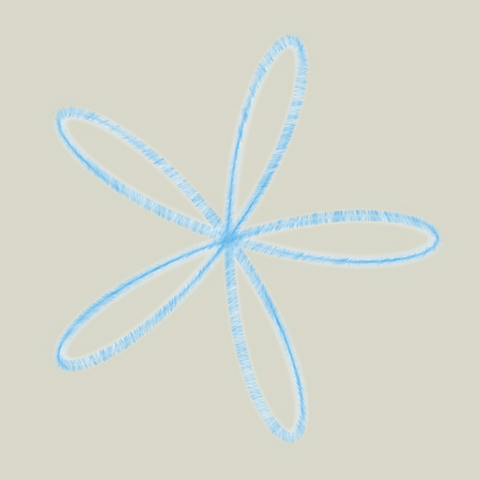
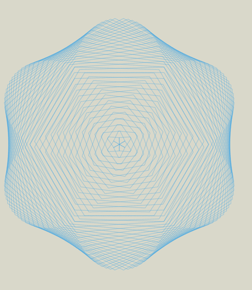

Simulating mouse movement to draw in mypaint
Wouldn't it be nice if we can command where to move the mouse pointer and press buttons, and then use the functionality to draw in a painting program? We can do exactly that in systems running xorg display server, by using xdotool to simulate mouse and keyboard.
E.g. to draw a simple 5 petal rose, \(r = \cos \left(5 \theta\right)\),
Below is the result of running the script with mypaint opened in fullscreen mode. Various effects can be achieved by selecting one among the hundreds of brushes available.

Result of 08-micro felt pen and glow pen by running the script twice
Next is another example with a pencil style chosen for the brush.

Result of running the script with pencil
Interesting, yes?